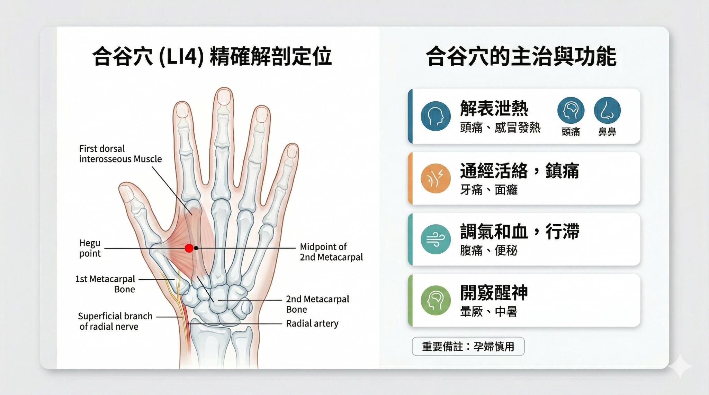
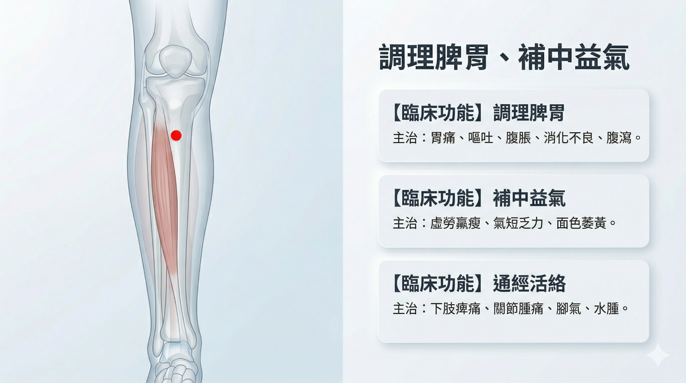

4 Module 4 — 製作醫學解剖插畫圖片

4.1 學習重點：什麼是 META-Prompt
META-Prompt 是一種更複雜、更詳細的指令，它事先為 AI 設定了角色（Role）、目標（Goal）、固定風格參數（Design Guidelines），以及內容邏輯結構（Quadrant Logic）。
核心目的：
- 穩定風格：確保每次生成圖像時，都能維持一致的藝術風格、色彩調性、排版與質感。
- 結構化內容：將複雜主題拆解成固定的邏輯區塊，強迫 AI 按照這個結構輸出細節。
- 自動化複雜提示詞的生成：一旦設定好 META-Prompt，使用者只需輸入一個簡單的主題，AI 就能自動根據所有預設規則，產生出完整且極度精確的英文圖像生成提示詞。
4.2 步驟 1：輸入 META-Prompt
你現在是一位結合中醫解剖學與醫療視覺設計的專家。
接下來，當我輸入任何【穴位名稱】時，請精確分析其解剖結構與主治功能，
並「嚴格」依照以下的 YAML 格式輸出結果。不要夾帶任何其他廢話。YAML 輸出格式定義：
acupuncture_point:
name: "[穴位繁體中文名稱] ([國際代碼，例如 LI4])"
pinyin: "[拼音]"
anatomy_details:
bone_landmark: "[精確的骨骼基準與定位點]"
muscle_layer: "[主要肌肉層次與深度]"
nerve_vessel: "[關鍵神經與血管]"
clinical_functions:
- function: "[核心主治一]"
symptoms: "[對應症狀，限 5 個字內]"
- function: "[核心主治二]"
symptoms: "[對應症狀，限 5 個字內]"
- function: "[核心主治三]"
symptoms: "[對應症狀，限 5 個字內]"
visual_generation_parameters:
layout: "16:9 寬版雙欄設計，左側半透明解剖圖，右側功能資訊卡片"
text_elements_zh_tw_for_post_editing:
title: "[穴位名稱] 精確解剖定位與主治"
anatomy_labels: ["[骨骼繁體標籤]", "[肌肉繁體標籤]", "[神經血管繁體標籤]"]
image_generation_prompt: >
A highly professional 16:9 medical infographic poster. Split layout.
Left side: Precise semi-transparent medical illustration of the [身體部位英文],
revealing the [具體骨骼英文] and [具體肌肉英文]. A clear red dot marks the
[拼音] acupuncture point. Attempt to include Traditional Chinese typography
for labels: "[代入骨骼與肌肉的繁體中文]".
Right side: Clean, modern clinical UI layout with 3 minimalist medical
function cards. Soft clinical colors (light blue, gray, white), scientific
aesthetics, no cluttered background. Attempt to write Traditional Chinese
text: "[代入核心主治一]、[代入核心主治二]".4.3 步驟 2：輸入你要的穴位
範例輸入：足三里
4.3.1 輸出範例
acupuncture_point:
name: "足三里 (ST36)"
pinyin: "Zú Sān Lǐ"
anatomy_details:
bone_landmark: "脛骨前嵴外側一橫指，犢鼻下 3 寸"
muscle_layer: "脛骨前肌、趾長伸肌深部"
nerve_vessel: "腓深神經、脛前動靜脈"
clinical_functions:
- function: "調理脾胃"
symptoms: "胃痛、嘔吐"
- function: "補中益氣"
symptoms: "疲勞、虛弱"
- function: "通經活絡"
symptoms: "下肢痹痛"
visual_generation_parameters:
layout: "16:9 寬版雙欄設計，左側半透明解剖圖，右側功能資訊卡片"
text_elements_zh_tw_for_post_editing:
title: "足三里 精確解剖定位與主治"
anatomy_labels: ["脛骨前嵴", "脛骨前肌", "腓深神經"]
image_generation_prompt: >
A highly professional 16:9 medical infographic poster. Split layout.
Left side: Precise semi-transparent medical illustration of the lower leg,
revealing the Tibia and Tibialis anterior muscle. A clear red dot marks the
Zusanli acupuncture point. Attempt to include Traditional Chinese typography
for labels: "脛骨、脛骨前肌".
Right side: Clean, modern clinical UI layout with 3 minimalist medical
function cards. Soft clinical colors (light blue, gray, white), scientific
aesthetics, no cluttered background. Attempt to write Traditional Chinese
text: "調理脾胃、補中益氣".4.4 步驟 3：將 Prompt 貼入新的對話窗
勾選：生成圖片，模型：思考型

4.5 步驟 4：如何生成 META-Prompt
當你跟生成式 AI 互動，覺得結果最滿意的時候，請後續輸入：
請輸出這個結果的 META-Prompt
注记
參考對話紀錄：穴位解剖定位與衛教圖生成對話紀錄
4.6 META-Prompt 總結
| 要素 | 說明 |
|---|---|
| Role（角色） | 專業醫學解剖插畫家 |
| Goal（目標） | 根據主題撰寫詳細的圖像生成提示詞 |
| Design Guidelines（設計指南） | 固定 2x2 排版、復古米色工程方格紙背景、達文西解剖風格 |
| Quadrant Logic（四格邏輯） | 骨骼/關節 → 肌肉/軟組織 → 神經/循環/臟器 → 整體體態/剪影 |
META-Prompt 是將您的專業醫療知識和視覺化意圖，轉化為可重複、可控制、高準確性的 AI 提示詞的高階結構化框架。